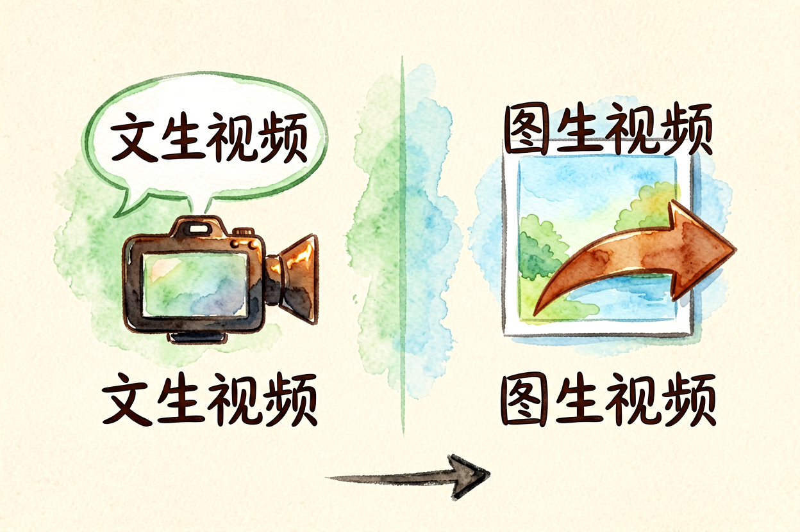
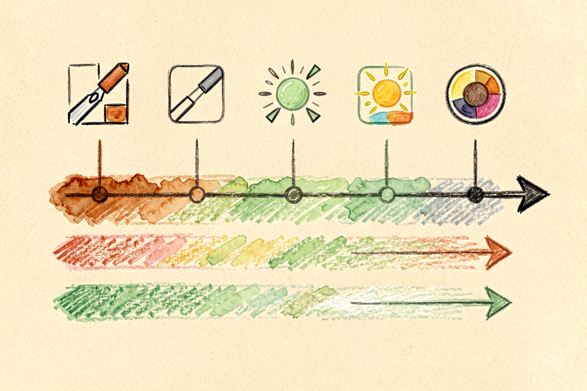
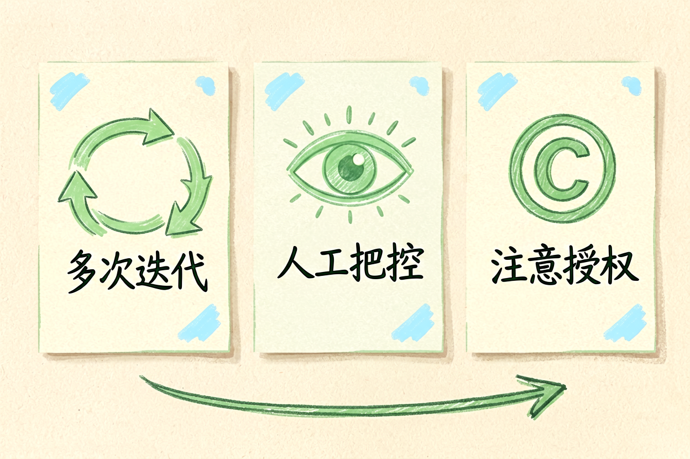
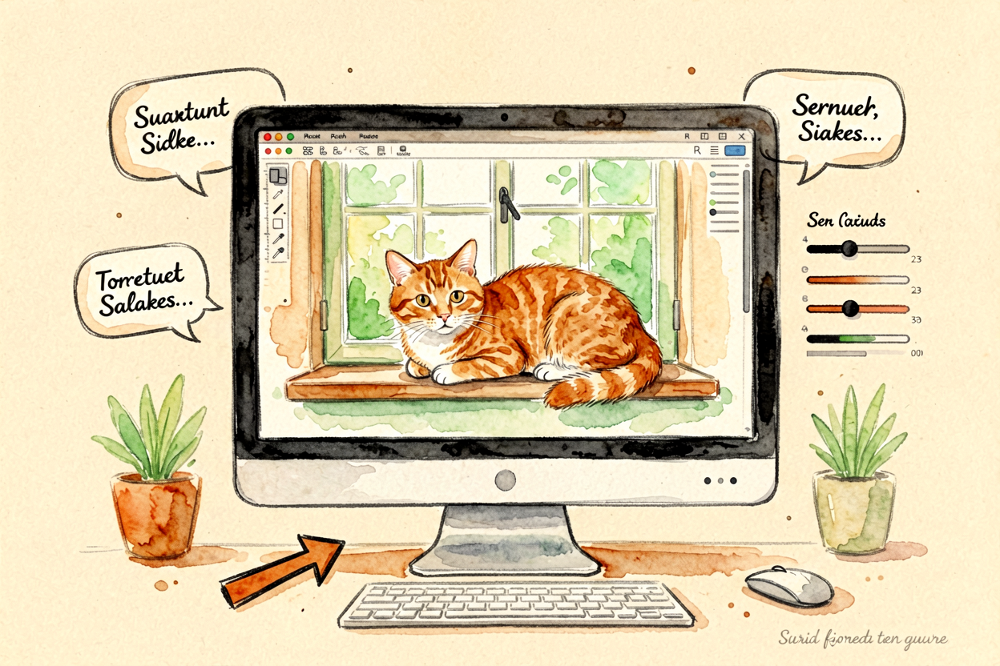

Runway 新手教程：从零到能剪辑 AI 视频
Runway 是 AI 视频剪辑领域的专业工具，Gen-3 Alpha 模型质量高，支持运镜控制、局部修复、风格迁移。本文从零讲清怎么用，新手一小时上手。
Runway新手教程是本文的核心主题。 !配图1Runway界面概览
{kind=link}
Runway新手入门：AI 视频剪辑的专业工具
Runway 是 AI 视频剪辑领域的标杆工具，Gen-3 Alpha 模型支持文生视频、图生视频、视频编辑、风格迁移、局部修复等功能。免费版每月 125 积分，够生成 25 秒视频，适合新手测试流程。
和Runway AI 视频工具评测里讲的高级功能不同，本文专注新手入门，从注册到出片一步步讲清楚。Runway 的优势是专业级质量、丰富工具链、API 开放，但学习曲线较陡，新手需要耐心。
Runway新手入门：注册与界面熟悉
打开 runwayml.com，用邮箱或 Google 账号注册。免费版每月 125 积分，足够测试基础功能。界面分三块：左侧项目列表、中间画布区、右侧工具栏。
新手建议先创建一个测试项目，熟悉基本操作。Runway 支持 Web 端和 Desktop 端，Desktop 端性能更好，适合处理长视频。
Runway新手入门：文生视频入门

文生视频是 Runway 最基础的功能。输入提示词，选择模型（Gen-3 Alpha 质量最高）、时长（5-60秒）、比例（16:9 横屏或 9:16 竖屏），点击生成。
提示词结构参考AI 视频生成实操里讲的四要素：主体、动作、环境、镜头。示例：
镜头缓慢推进，一只橘猫趴在窗台晒太阳，午后阳光，电影感，横屏 1080P。生成后预览，人物别变形、动作别断层就下载。不满意就改提示词重生成，别反复在同一段上烧积分。
Runway新手入门：Motion Brush 运镜控制

Motion Brush 是 Runway 的运镜控制工具，能在图片上画箭头，指定局部运动方向和幅度。适合做动态插画、产品展示、风景延时等场景。
操作分三步：上传图片、用 Brush 画箭头、调整强度。箭头方向决定运动方向，长度决定运动幅度。新手建议从简单场景开始，比如让水面流动、让树叶飘动，熟练后再做复杂运镜。
Runway新手入门：Inpainting 局部修复

Inpainting 是局部修复工具，能擦除视频中不需要的元素，或替换局部内容。适合去水印、去路人、修复破损画面等场景。
操作分三步：选择区域、输入替换描述、生成。新手建议先小范围测试，确认效果满意后再大面积使用。Inpainting 对复杂背景（树叶、水面）处理效果一般，需要多次迭代。
Runway新手入门：导出与分享

Runway 支持导出 MP4、MOV 格式，分辨率最高 1080p。免费版导出的视频带水印，商用场景建议付费档。导出前预览检查，重点看是否有变形、卡顿、音画不同步。
和AI 视频剪辑入门里讲的逻辑一致，导出只是最后一步，前期提示词和参数设置才是质量关键。
关于 Runway 新手教程，核心经验是「先熟悉，再深挖」。别一上来就挑战复杂项目，先从简单文生视频跑通流程，确认理解交互逻辑后再逐步解锁高级功能。
Runway 新手教程的关键是动手试。别看完就忘，当天就生成第一段视频，让操作成为习惯。用多了自然熟练。掌握 Runway 新手入门的技巧，视频剪辑效率会翻倍。
本文信息核对于 2026-09-07。AI 产品的价格、免费额度与功能变动频繁，实际以各工具官网当前说明为准。